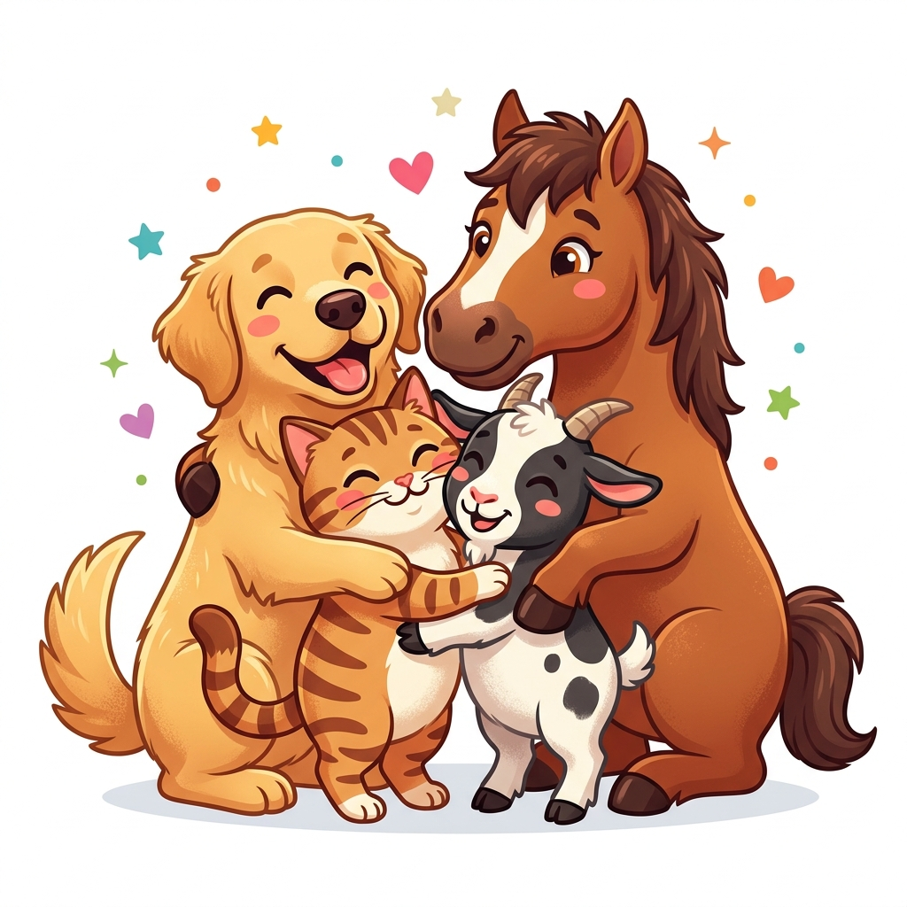

🐶
Especial Canino
Perros
Información detallada sobre Parvovirus, Moquillo, Rabia, Tos de las perreras y problemas dermatológicos.
Ver enfermedades de perros →Encuentra información sencilla, preventiva y confiable sobre enfermedades, cuidados esenciales y señales de alerta para mantener saludables a tus perros, gatos y demás mascotas.

Aprende a identificar problemas de salud frecuentes en perros y gatos para actuar a tiempo con ayuda profesional.
Información detallada sobre Parvovirus, Moquillo, Rabia, Tos de las perreras y problemas dermatológicos.
Ver enfermedades de perros →Conoce más sobre Leucemia felina, Panleucopenia, Rinotraqueítis, afecciones urinarias y parásitos.
Ver enfermedades de gatos →Aprende a reconocer cambios físicos y conductuales que requieren consulta médica veterinaria inmediata.
Ver señales de alerta →Acciones sencillas cotidianas que aseguran una vida larga, feliz y llena de energía para tus mascotas.
Nutrición balanceada según su etapa de vida, peso y necesidades energéticas.
Agua limpia y disponible todo el tiempo para prevenir deshidratación y problemas renales.
Cepillado periódico, cuidado del pelaje, orejas y garras para evitar infecciones.
Paseos, juegos y estimulación mental diaria para combatir el estrés y sobrepeso.
Un plan preventivo continuo previene enfermedades graves y garantiza el bienestar de toda la familia.
Tres pilares básicos que todo tutor responsable debe recordar siempre:
Lleva a tu mascota al veterinario al menos una o dos veces al año, incluso si parece totalmente sana.
Nunca le des analgésicos o antibióticos de uso humano. Muchos son altamente tóxicos y mortales para perros y gatos.
Asegúrate de que lleve placa de identificación con tu teléfono y, de ser posible, microchip de registro.
Conoce las vivencias de otros tutores y comparte tus propios consejos sobre el cuidado de tus peludos.
"Aprender sobre prevención y reconocer a tiempo las señales de malestar en nuestras mascotas nos permite darles la calidad de vida que merecen."
Compartir tu experienciaLa información presentada en VetSalud tiene carácter estrictamente educativo e informativo. No sustituye la consulta, diagnóstico ni tratamiento profesional de un médico veterinario colegiado. Ante cualquier síntoma o duda sobre la salud de tu mascota, acude de inmediato a un centro veterinario.